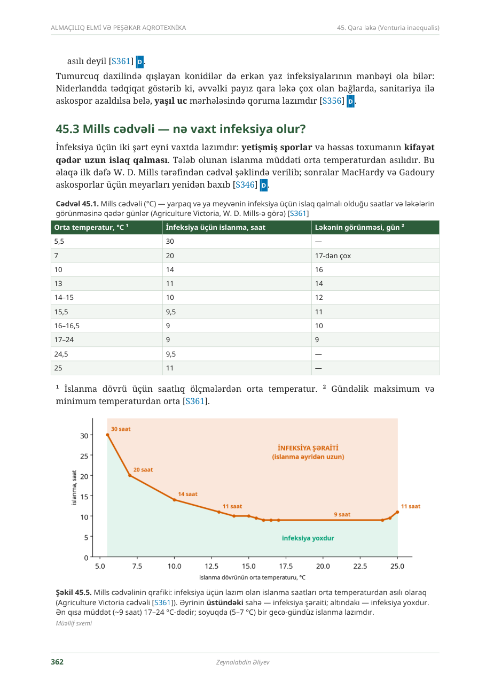

QARALAMA
SCAB_MILLS_VIC · versiya 1.0 · çıxarıldı 11.11.2026
Mills cədvəli — kitab ilə müqayisə
Hər sətri soldakı orijinal səhifə ilə yoxlayın. Təsdiqdən sonra qayda AKTİV olur və mühərrik ondan istifadə edir.
[KİTAB] Fəsil 45.3 · Cədvəl 45.1 · səh. 362

Çıxarılmış cədvəl
{{checked}} / 10 sətir yoxlanıb| ORTA T, °C | İSLANMA, SAAT | LƏKƏ, GÜN | YOXLANDI |
|---|---|---|---|
| {{r.t}} | {{r.h}} | {{r.d}} |
Qaydanın məlumatları
Versiya: orijinal Mills (1944), "yüngül infeksiya" sütunu, °C — ehtimal
İlkin mənbə: [ELMİ] S361 Agriculture Victoria
Temperatur: islanma dövründə saatlıq ölçmələrin ortası
Diapazondan kənar: < 5,5 °C və > 25 °C → məlumat kifayət deyil
Kitabda yoxdur: orta və ağır infeksiya sütunları
Təsdiq düyməsi bütün 10 sətir yoxlananda aktivləşir. Kim və nə vaxt təsdiqlədiyi audit jurnalına yazılır.